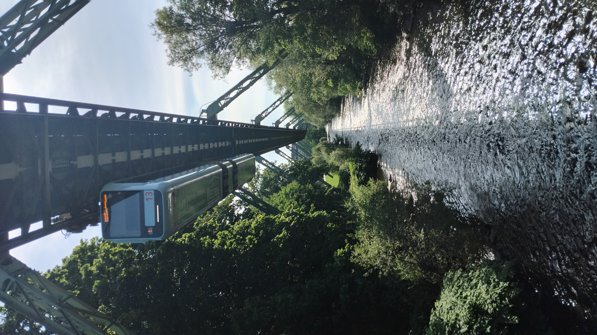
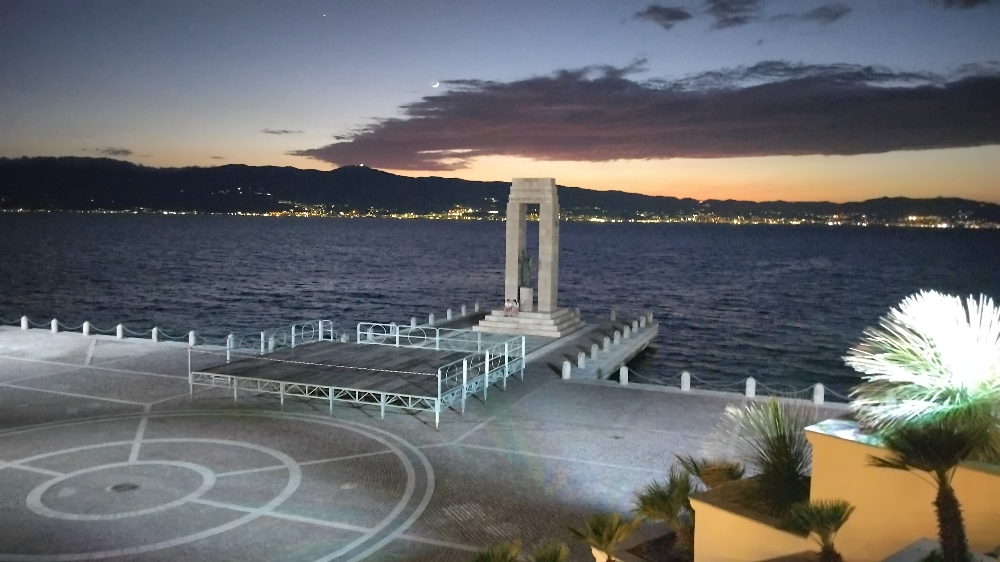

It started with a cheap flight out to Italy and ended up becomming quite the adventure. Over 2 different trips, I managed to visit 7 different countries (travelling on trains in all of them, of course) and had a great time exploring a couple of U-Bahn systems as well. This page gives a brief summary of where I went and how I got there - the links will take you to some photos and a bit more information about each of the days. It goes without saying that these are based off the early summer 2026 timetables, and they almost certainly will have changed since.
A fairly uneventful day really. Started off with getting the train and then DLR to London City Airport. Managed to get from the DLR through security in less than ten minutes, though I then ended up hanging around for ages as my bag didn't scan on the X-Ray machine initially and so had to go through again! There weren't any direct flights to Reggio on a Tuesday, so I went via Milan Linate - it was a shame it was a cloudy day in the UK so I couldn't see too much of our climb up and over London.
I had about four hours to make the connection, so I popped on the metro into the city centre and had a very civilised sandwich in the park. I even managed to hop on a tram on the way back to spice up my life a bit. The second flight was also nice and easy, and it was great fun being able to step off the train and be out of the airport in about two minutes! A nice pizza for dinner (when in Italy...) did me nicely and I ended the day with a wander through the city.

Once I'd found a cheap flight, I then pondered what the longest train journey I could (sensibly) do that day would be. It turns out it's a Frecciarossa service all the way through to Turin, going via Bologna, Rome and Milan on the way. Having a play on the Trenitalia website, I found four classes and (since I was on holiday) I decided Executive class was the one for me. 190 Euros later and the tickets were all booked - it transpires that if you register for Carta Freccia, they give you a one-time upgrade and I was able to save myself €110. Result!
Executive Class is a lovely way to travel - you get a gorgeous armchair (it's much nicer than a seat) to sit in which can recline up to about 45 degrees. Food and drink is all included in the ticket price and there's a very extensive menu to pick from. If you're going to want a couple of meals and are a fussier eater, it's probably worth flicking through it in advance as a lot of the lunch and dinner options are the same. I ended up having two meals onboard with plenty of drinks and snacks the whole day. There's even a full blown boardroom in the carriage if you need to have a meeting, because why not! The crew was absolutely lovely and I think we got on very well, even though they were speaking to me almost entirely in Italian and my knowledge doesn't extend much beyond grazie mille!
The journey itself was very pleasant. I think a regular byproduct of spending most of the time eating is that you don't spend too much time looking out the window, but the Italy that I did see was all very agreeable. Zooming allong at 300 km/h sipping prosecco and nibbling raisins is a lifestyle I could get used to! There were some problems with the overhead wires just before Milan so we were decamped to the conventional lines for a bit, though that didn't spoil my mood and it's certainly a way which I would like to travel again!
Another very pleasant day (yes, there's a theme here) started with a hot chocolate and pastry in a cafe round the corner from my hotel. It was then back to Porta Nuova and onto another Frecciarossa to Milano Centrale. This was 'just' in Business Class which comes with a nice comfy seat and some water, juice and sandwiches. The latter were tiny and full of meat - be warned! Being a cheapskate and not wanting to pay another €13 for a seat to Verona, I then hopped on a local train. We skirted the south tip of the Lago di Garda, giving me to reminisce of a previous trip where I took ferries here, there and everywhere over the lake.
I had a little bit of time in Verona so wandered into town in search of food and picked up a sandwich for lunch. I then got to enjoy my first bit of loco hauled action of the trip, on board an ÖBB service up through Inssbruck to München. This was pretty popular and the scenery certainly didn't dissapoint. Climbing up through the mountains towards the border was wonderful, and then as we left the border station and entered Austria properly the road viaducts and vastness of the lanscape really did take my breath away.
I managed to sample an apple cider soup and lasagne when we were a couple of hours out from Munich - it turns out that the menus had changed that day, meaning everyone was confused what was available, in stock and ready to be eaten! After a trip to the buffet counter, the food was served at my seat and I was able to enjoy our arrival into Munich. From there a quick U-Bahn across town got me to my hotel.
A more leisurely start to the day today, which began by seeing a bit of Munich. I had a little walk around my hotel, then headed across town to the Allianz Arena. The classic tourist picture outside the stadium followed, before I decided that I needed something older and so headed for the Olympic stadium and Olympic park. Time then caught up with me so I headed back to Hauptbahnhof. My booked train to Nurenberg was far too full for my liking (they'd been a previous cancellation) so I hopped aboard the next one.
Nothing really to report on that one - I thought I'd have plenty of time to change but we ended up getting held outside the station such that it was squeaky bum time and a mad dash across to the other side of the station. Thankfully, it seemed, DB had chosen to be merciful to us and the train was held. We got moving and I looked at the app to discover I was in the wrong part of the train! We had four two-carriage trains coupled together - I needed the front two sets and I was currently at the very rear. Some mad unit hopping ocurred at our next couple of stops until I was finally able to settle into my seat knowing I would indeed end up in Hof.
The next leg was onwards to Zwickau - I can't remember any of it which means it was almost certainly uneventful! I dashed to Kaufland (my new favourite shop) on the other side of the tracks and then boarded my next S-Bahn train towards Leipzig. The original plan was to continue to Haale and change for an ICE there, but a couple of days before I received an email from DB telling me that this train was instead going via Leipzig instead. However, to throw another spanner in the works, DB was having one of its days and this rerouted train ended up cancelled. It seemed the least worst option was to change in Haale - I stopped at the station for some food of course!
I got to the platform in plenty of time, but of course DB had decided the fun wouldn't end there - the train kept getting later and later until it arrived about 40 minutes behind schedule (so 100 minutes late by the original timings). The journey to Berlin was uneventful, but all in the dark so nothing to report. The U-Bahn at Hbf was nice and simple and I arrived at the hotel at not too stupid a time. Thank goodness for 24 hour reception!